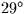
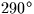
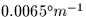

| TDK | D | ambient temperature at the observer (degrees K) |
|---|---|---|
| PMB | D | pressure at the observer (mB) |
| RH | D | relative humidity at the observer (range 0-1) |
| WL1 | D | base wavelength ( |
| A1 | D | refraction coefficient A for wavelength WL1 (radians) |
| B1 | D | refraction coefficient B for wavelength WL1 (radians) |
| WL2 | D | wavelength for which adjusted A,B required ( |
| A2 | D | refraction coefficient A for wavelength WL2 (radians) |
|---|---|---|
| B2 | D | refraction coefficient B for wavelength WL2 (radians) |
| height above sea level | 2000m | |
| latitude |  | |
| pressure | 793mB | |
| temperature | K | |
| humidity | 0.5 (50%) | |
| lapse rate |  | |
| reference wavelength | ||
| star elevation |
SLALIB --- Positional Astronomy Library